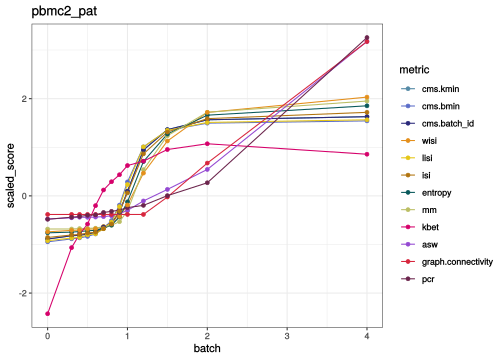
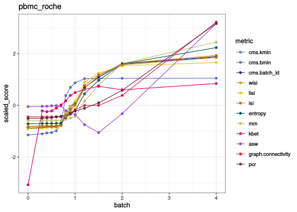
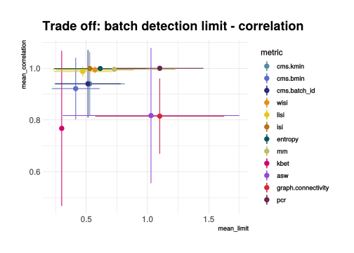

Metrics Scaling simulation
Almut Lütge
13 November, 2020
suppressPackageStartupMessages({
library(scater)
library(CellMixS)
library(purrr)
library(tidyr)
library(dplyr)
library(gridExtra)
library(scran)
library(cowplot)
library(jcolors)
library(ggpubr)
library(stringr)
library(viridis)
library(scales)
library(hrbrthemes)
library(magrittr)
library(forcats)
library(corrplot)
library(RColorBrewer)
library(ggforce)
})
options(bitmapType='cairo')Dataset and metrics
last <- params$last
sce_whole_name <- unlist(c(strsplit(params$sce_name, ",")))
sce_name <- gsub("^sim_", "", sce_whole_name) %>%
gsub("_[0-9].*", "", .) %>% unique()
metrics <- unlist(c(strsplit(params$metrics, ",")))
sce_sim_list <- lapply(sce_name, function(dataset){
sim_vec <- sce_whole_name[grepl(dataset, sce_whole_name)]
}) %>% set_names(sce_name)
sce_list <- lapply(sce_name, function(dataset){
sim_vec <- paste0(params$sce, sce_sim_list[[dataset]], "_", last, "_sce.rds") %>%
set_names(sce_sim_list[[dataset]])
}) %>% set_names(sce_name)
meta_list <- lapply(sce_name, function(dataset){
sim_vec <- paste0(params$meta, sce_sim_list[[dataset]], "_meta.rds") %>%
set_names(sce_sim_list[[dataset]])
}) %>% set_names(sce_name)
out_path_cor <- params$out_cor
out_path_res <- params$out_res
out_path_fig <- params$fig_res
cols_data <-c(c(jcolors('pal6'),jcolors('pal8'))[c(1,8,14,5,2:4,6,7,9:13,15:20)],jcolors('pal4'))
names(cols_data) <- c()
cols <-c(c(jcolors('pal6'),jcolors('pal8'), jcolors('pal7'))[c(1,12,18,25,27,2,4,7,3,6,8,14,9,20)],jcolors('pal4'))
names(cols) <- c()Scaling with simulated batches
Overall scaling
How do the metric scores scale with simulated batch effects that are gradually increased?
metric_vec <- gsub("_", ".", metrics)
metric_vec <- gsub("default", "", metric_vec)
dataset_sim_tab <- function(dataset){
sim_list <- lapply(sce_sim_list[[dataset]], function(sim_name){
sce <- readRDS(sce_list[[dataset]][[sim_name]])
meta <- readRDS(meta_list[[dataset]][[sim_name]])
metric_nam <- grep(paste(metric_vec, collapse="|"),
names(colData(sce)), value=TRUE)
metric_nam <- metric_nam[-grep("smooth", metric_nam)]
res <- as.data.frame(colData(sce)[, metric_nam])
res$cell <- colnames(sce)
res
}) %>% set_names(sce_sim_list[[dataset]])
sim_tab <- sim_list %>% bind_rows(.id = "dataset")
metric_vec[metric_vec %in% "cms."] <- "cms.batch_id"
sim_wide_list <- lapply(metric_vec, function(met){
met_col <- colnames(sim_tab)[grepl(paste0("^", met), colnames(sim_tab))]
metr_long <- sim_tab[, c("dataset", "cell", met_col)]
metr_long$dataset <- as.factor(metr_long$dataset)
metr_wide <- pivot_wider(metr_long, names_from = dataset,
values_from = met_col)
}) %>% set_names(metric_vec)
}
res_by_met <- lapply(sce_name, dataset_sim_tab) %>% set_names(sce_name)
#### ---------- Order by metric type ----------------------------------#######
#(manual needs to be adjusted if new metrics are added)
cms_ind <- grep("cms", names(res_by_met[[1]]))
lisi_ind <- grep("isi", names(res_by_met[[1]]))
ent_ind <- grep("entropy", names(res_by_met[[1]]))
mm_ind <- grep("mm", names(res_by_met[[1]]))
asw_ind <- grep("sw", names(res_by_met[[1]]))
kbet_ind <- grep("kbet", names(res_by_met[[1]]))
graph_ind <- grep("graph", names(res_by_met[[1]]))
pcr_ind <- grep("pcr", names(res_by_met[[1]]))
metric_order <- names(res_by_met[[1]])[c(cms_ind, lisi_ind, ent_ind, mm_ind,
kbet_ind, asw_ind, graph_ind, pcr_ind)]
names(cols) <- names(res_by_met[[1]])
#cols <- cols[names(res_by_met[[1]])]
####--------------------------------------------------------------------########
mean_tab <- lapply(sce_name, function(dataset){
met_res <- res_by_met[[dataset]]
metric_vec[metric_vec %in% "cms."] <- "cms.batch_id"
met_mean <- lapply(metric_vec, function(met){
mean_vec <- met_res[[met]] %>% select(-cell) %>% as.matrix() %>% colMeans(., na.rm = TRUE)
}) %>% bind_cols() %>% set_colnames(metric_vec)
batch_vec <- colnames(met_res[[1]]) %>% str_match("_([0-9].*?)_")
batch_vec <- as.numeric(batch_vec[!is.na(batch_vec[, 2]), 2])
met_mean$batch <- batch_vec
met_mean
}) %>% set_names(sce_name)
#scale means
scale_means <- lapply(names(mean_tab), function(dataset){
mean_res <- mean_tab[[dataset]]
dir_ind <- which(!colnames(mean_res) %in% c("batch", "mm", "kbet", "pcr"))
mean_res[, dir_ind] <- mean_res[, dir_ind] * -1
scale_res <- mean_res %>% select(-batch) %>% scale() %>% as.data.frame()
scale_res$batch <- mean_res$batch
scale_res
}) %>% set_names(names(mean_tab))
plot_trends <- function(dataset){
mean_res <- scale_means[[dataset]]
mean_long <- mean_res %>% pivot_longer(-batch, names_to = "metric",
values_to = "scaled_score")
mean_long$metric <- factor(mean_long$metric,levels = metric_order)
ggplot(mean_long, aes(x = batch, y = scaled_score)) +
geom_line(aes(color = metric)) +
geom_point(aes(color = metric)) +
theme_bw() +
scale_color_manual(values = cols) +
ggtitle(dataset)
}
template <- c(
"#### {{nm}}\n",
"```{r scaling{{nm}}, echo = FALSE}\n",
"plot_trends('{{nm}}')\n",
"```\n",
"\n"
)
plots <- lapply(names(scale_means),
function(nm) knitr::knit_expand(text = template)
)csf_patient

pbmc2_pat

pbmc_roche

pbmc2_media
csf_media
hca
cellbench
Compare detection limits and correlation within limits
To compare the metrics limits and their relative correlation with batch strength/size we define an upper limit at 95% of the maximal metrics score and a minimal limit at the minimal metrics score and use the corresponding batch size factor as batch limits. We check the metrics correlation with the batch size factor between it’s limits. Be aware that these limits are dataset specific and do not represent fixed limits. They can only be used to compare metrics, but are not informative about the absolut metric’s sensitivity.
limit_list <- lapply(names(mean_tab), function(dataset){
mean_res <- mean_tab[[dataset]]
lim_rev <- function(x){
percent <- (max(x) - min(x))/100
lower <- which(x < (max(x) - 10 * percent)) # smallest value above 0.95 * batch0
upper <- which(x > (min(x) + 10 * percent))
upper_lim <- which(x < (min(x) + 1 * percent))
lower_lim <- which(x > (max(x) - 1 * percent))
min_bat <- min(mean_res$batch[which(x == max(x))])
max_bat <- min(mean_res$batch[which(x == min(x))])
res_low <- min(mean_res$batch[lower][mean_res$batch[lower] > min_bat])
res_up <- min(mean_res$batch[upper][mean_res$batch[upper] > max_bat])
res_up_limit <- min(mean_res$batch[upper_lim])
res_low_limit <- min(mean_res$batch[lower_lim])
batch <- c(res_low, res_up, res_up_limit, res_low_limit)
}
batch_lim <- apply(mean_res, 2, lim_rev) %>% set_rownames(c("lower", "upper", "limit", "limit2"))
batch_lim[,c("kbet", "mm", "pcr")] <-
batch_lim[c(2,1,4,3), c("kbet", "mm", "pcr")]
batch_lim
}) %>% set_names(names(mean_tab))
lim_fun <- function(dataset){
lim_res <- limit_list[[dataset]]
lim_low <- lim_res["lower",] %>% set_names(colnames(lim_res))
}
limit_tab <- names(limit_list) %>% map(lim_fun) %>%
set_names(names(limit_list)) %>% bind_cols() %>%
mutate(metric = colnames(limit_list[[1]]))
lim_long <- limit_tab %>% filter(!metric %in% "batch") %>%
pivot_longer(-metric, names_to = "dataset", values_to = "batch_limit")
cor_list <- lapply(names(mean_tab), function(dataset){
mean_res <- mean_tab[[dataset]]
limit_res <- limit_list[[dataset]]
cor_fun <- function(metric){
cor_res <- mean_res %>%
filter(batch <= limit_res["limit", metric]) %>%
select(metric, "batch") %>% cor(method ="pearson") %>% min() %>% abs()
#%>% filter(batch >= limit_res["lower", metric])
}
cor_tab <- map(colnames(mean_res), cor_fun) %>% bind_cols() %>%
set_colnames(colnames(mean_res))
}) %>% bind_rows() %>% set_rownames(names(mean_tab))
cor_long <- cor_list %>% mutate(dataset = rownames(.)) %>% select(-batch) %>%
pivot_longer(-dataset, names_to = "metric", values_to = "correlation")
cor_list_all <- lapply(names(mean_tab), function(dataset){
mean_res <- mean_tab[[dataset]]
limit_res <- limit_list[[dataset]]
cor_fun <- function(metric){
cor_res <- mean_res %>%
select(metric, "batch") %>% cor(method ="spearman") %>% min() %>% abs()
}
cor_tab <- map(colnames(mean_res), cor_fun) %>% bind_cols() %>%
set_colnames(colnames(mean_res))
}) %>% bind_rows() %>% set_rownames(names(mean_tab))
cor_long_all <- cor_list_all %>% mutate(dataset = rownames(.)) %>% select(-batch) %>%
pivot_longer(-dataset, names_to = "metric", values_to = "correlation")
### Mutual information
# mut_list <- lapply(names(mean_tab), function(dataset){
# mean_res <- mean_tab[[dataset]]
# mut <- cmi(mean_res)
# norm_mi <- mut$mi[ncol(mut$mi), nrow(mut$mi)]
# norm_vec <- rep(sqrt(norm_mi * norm_mi), ncol(mean_res))
# norm_mut <- mut$mi[,ncol(mut$mi)]/norm_vec %>% set_names(colnames(mean_res))
# }) %>% bind_rows() %>% set_rownames(names(mean_tab))
#
# mut_long <- mut_list %>% mutate(dataset = rownames(.)) %>% select(-batch) %>%
# pivot_longer(-dataset, names_to = "metric", values_to = "MI")
# # order by metrics type
lim_long$metric <- factor(lim_long$metric,levels = metric_order)
cor_long$metric <- factor(cor_long$metric,levels = metric_order)
cor_long_all$metric <- factor(cor_long_all$metric,levels = metric_order)
#mut_long$metric <- factor(mut_long$metric,levels = metric_order)Batch limits
p <- ggplot(lim_long, aes(x = metric , y = batch_limit, fill = metric)) +
geom_boxplot(fill = cols[1:length(levels(as.factor(lim_long$metric)))], alpha = 0.5) +
geom_dotplot(binaxis='y', stackdir='center', dotsize=0.5) +
scale_fill_manual(values=cols) +
theme_ipsum(base_family = 'Helvetica') +
theme(axis.text.x = element_text(size=10, angle=45, hjust = 1))
p## `stat_bindot()` using `bins = 30`. Pick better value with `binwidth`.
saveRDS(p, paste0(out_path_fig, "_limits.rds"))Relative strength correlation
p <- ggplot(cor_long, aes(x = metric , y = correlation, fill = metric)) +
geom_boxplot(fill = cols[1:length(levels(as.factor(cor_long$metric)))], alpha = 0.5) +
geom_dotplot(binaxis='y', stackdir='center', dotsize=0.5) +
scale_fill_manual(values=cols) +
theme_ipsum(base_family = 'Helvetica') +
theme(axis.text.x = element_text(size=10, angle=45, hjust = 1))
p## `stat_bindot()` using `bins = 30`. Pick better value with `binwidth`.
saveRDS(p, paste0(out_path_fig, "_rel_cor.rds"))Total strength correlation
p <- ggplot(cor_long_all, aes(x = metric , y = correlation, fill = metric)) +
geom_boxplot(fill = cols[1:length(levels(as.factor(cor_long$metric)))], alpha = 0.5) +
geom_dotplot(binaxis='y', stackdir='center', dotsize=0.5) +
scale_fill_manual(values=cols) +
theme_ipsum(base_family = 'Helvetica') +
theme(axis.text.x = element_text(size=10, angle=45, hjust = 1))
p## `stat_bindot()` using `bins = 30`. Pick better value with `binwidth`.
saveRDS(p, paste0(out_path_fig, "_cor.rds"))Plot trade-off between strength correlation and detection limit
#join datasets
trade_long <- full_join(cor_long_all, lim_long, by = c("dataset", "metric"))
trade_sorted <- trade_long %>% group_by(metric) %>%
summarise(mean_correlation = mean(correlation),
mean_limit = mean(batch_limit),
correlation_sd = sd(correlation),
batch_limit_sd = sd(batch_limit))
lev_metric_level <- c(cell = c("cms.bmin", "cms.batch_id","cms.kmin",
"isi", "wisi", "lisi", "entropy", "mm"),
celltype = c("kbet", "asw", "graph.connectivity"),
global = "pcr")
trade_sorted$metric_level <- fct_collapse(factor(trade_sorted$metric),
cell = c("cms.bmin", "cms.batch_id",
"cms.kmin", "isi", "wisi",
"lisi", "entropy", "mm"),
celltype = c("kbet", "asw", "sw",
"casw", "graph.connectivity"),
global = "pcr")## Warning: Unknown levels in `f`: sw, caswggplot(trade_sorted, aes(x=mean_limit, y=mean_correlation, color=metric)) +
geom_pointrange(aes(ymin=mean_correlation - correlation_sd,
ymax=mean_correlation + correlation_sd)) +
geom_pointrange(aes(xmin=mean_limit - batch_limit_sd,
xmax=mean_limit + batch_limit_sd)) +
scale_colour_manual(values=cols) +
ggtitle("Trade off: batch detection limit - correlation") +
theme_ipsum(base_family = 'Helvetica')
Trade off top metrics
trade_top <- trade_sorted %>% filter(mean_limit < 0.6, mean_correlation > 0.7)
ggplot(trade_top, aes(x=mean_limit, y=mean_correlation, color=metric)) +
geom_pointrange(aes(ymin=mean_correlation - correlation_sd,
ymax=mean_correlation + correlation_sd)) +
geom_pointrange(aes(xmin=mean_limit - batch_limit_sd,
xmax=mean_limit + batch_limit_sd)) +
scale_colour_manual(values = cols) +
ggtitle("Trade off: batch detection limit - correlation") +
theme_ipsum(base_family = 'Helvetica')
Trade-off mean_only
#join datasets
p <- ggplot(trade_sorted, aes(x=mean_limit, y=mean_correlation, color=metric, shape = metric_level)) +
geom_point(size = 8, color = "black", ) +
geom_point(size = 7) +
scale_colour_manual(values=cols) +
ggtitle("Trade off: Sensitivity - scaling") +
theme_ipsum(base_family = 'Helvetica') +
theme(legend.box = "vertical")
p
saveRDS(p, paste0(out_path_fig, "_trade_off.rds"))Trade-off using relative correlation
#join datasets
p <- ggplot(trade_sorted, aes(x=mean_limit, y=mean_correlation, color=metric, shape = metric_level)) +
geom_point(size = 8, color = "black", ) +
geom_point(size = 7) +
scale_colour_manual(values=cols) +
ggtitle("Trade off: Sensitivity - scaling") +
theme_ipsum(base_family = 'Helvetica') +
theme(legend.box = "vertical")
p
saveRDS(p, paste0(out_path_fig, "_trade_off_relative.rds"))Correlation between metrics
Check mean correlation
#scale means
scale_m <- lapply(names(mean_tab), function(dataset){
mean_res <- mean_tab[[dataset]]
scale_res <- mean_res %>% select(-batch) %>% scale() %>% as.data.frame()
}) %>% set_names(names(mean_tab))
cor_met <- lapply(names(scale_m), function(dataset){
scal_res <- scale_m[[dataset]]
cor_scal <- cor(scal_res, use = "complete.obs", method = "spearman")
})
cor_met_mean <- Reduce(`+`, cor_met)/length(cor_met)
corrplot(cor_met_mean,
type="upper",
order="original",
hclust.method = "complete",
col=brewer.pal(n=8, name="PuOr"),
addgrid.col = NA,
addCoef.col = "black",
diag = FALSE)#save correlation
saveRDS(cor_met_mean, out_path_cor)
saveRDS(trade_sorted, out_path_res)Metrics performance separated
sep_trends <- function(dataset){
mean_res <- scale_means[[dataset]]
dat_nam <- dataset
cor_dat <- cor_long %>% dplyr::filter(dataset %in% dat_nam) %>%
arrange(match(metric, metric_order)) %>% select(correlation) %>%
abs() %>% signif(digits = 2)
label <- data.frame(
scaled_score = c(rep(-1, 12)),
batch = c(rep(2.5, 12)),
metric = metric_order,
label = c(paste0("R = ", cor_dat$correlation))
)
lim_ordered <- limit_tab %>% dplyr::filter(metric %in% metric_order) %>%
arrange(match(metric, metric_order))
find_scal <- function(met){
lim <- lim_ordered[lim_ordered$metric %in% met, dataset]
lim_score <- mean_res[mean_res$batch == lim[[1]], met]
}
mean_lim <- metric_order %>% map(find_scal) %>% unlist()
sens_limit <- data.frame("batch" = lim_ordered[,dataset][[1]],
"metric" = metric_order,
"scaled_score" = mean_lim,
"label" = paste0("limit = ", lim_ordered[,dataset][[1]]))
mean_long <- mean_res %>% pivot_longer(-batch, names_to = "metric",
values_to = "scaled_score")
mean_long <- mean_long %>% mutate(metric2 = metric)
cols_rep <- rep(cols[1: ncol(mean_res)-1], each = nrow(mean_res))
mean_long$metric <- factor(mean_long$metric,levels = metric_order)
p <- ggplot(mean_long, aes(x = batch, y = scaled_score)) +
geom_line(data=mean_long %>% dplyr::select(-metric), aes(group=metric2),
color="grey", size=0.5, alpha=0.5) +
geom_line( aes(color=metric), color=cols_rep, size=1.2 ) +
theme_ipsum(base_family = 'Helvetica') +
theme(
legend.position="none",
plot.title = element_text(size=14),
panel.grid = element_blank()
) +
geom_label(data = label, aes(label = label), size = 6) +
geom_mark_circle(data = sens_limit, aes(label = label, x = batch, y = scaled_score),
label.colour = "black", inherit.aes = FALSE,
label.fontsize = 16,
size = 1,
expand = unit(1, "mm"),
label.minwidth = unit(50, "mm")) +
ggtitle(dataset) +
facet_wrap(~metric)
p
}
template_sep <- c(
"#### {{nm}}\n",
"```{r scaling sep {{nm}}, echo = FALSE, fig.width = 8, fig.height = 7}\n",
"p <- sep_trends('{{nm}}')\n",
"p",
"saveRDS(p, paste0(out_path_fig, '_{{nm}}.rds'))",
"```\n",
"\n"
)
plots_sep <- lapply(names(scale_means),
function(nm) knitr::knit_expand(text = template_sep)
)csf_patient

pbmc2_pat

pbmc_roche

pbmc2_media

csf_media

hca

cellbench